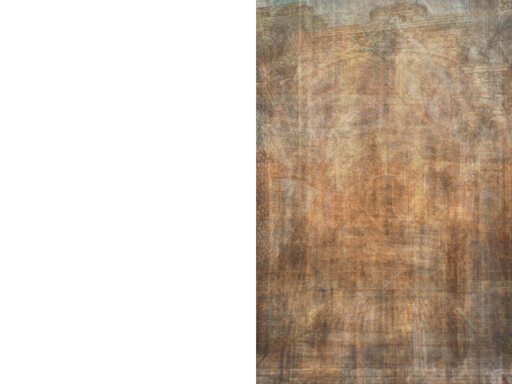
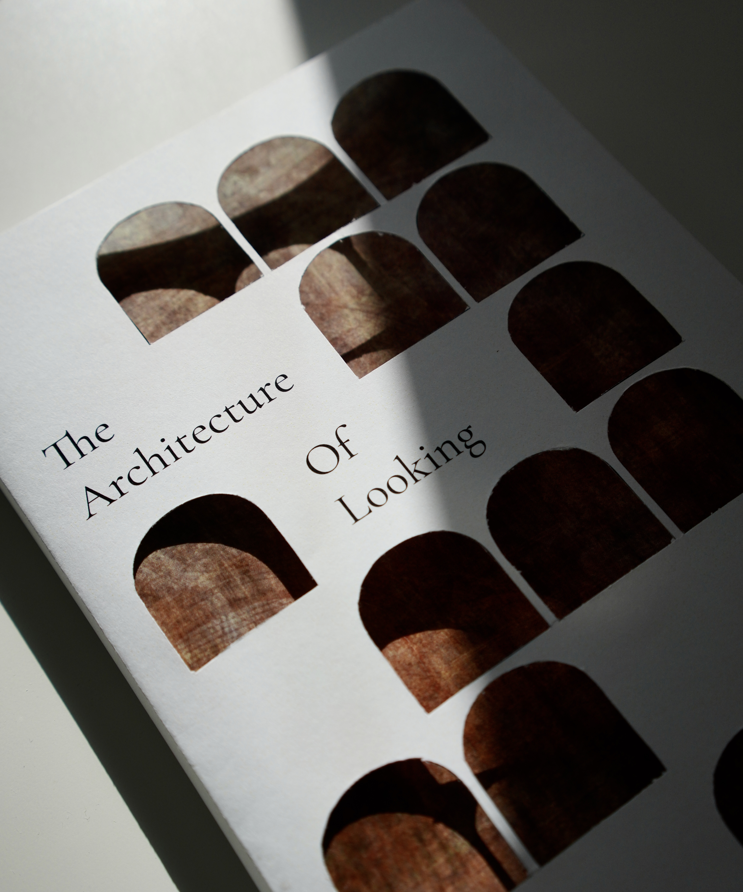

The Architecture of Looking
256 Project

A visual study of architecture through observation, perspective, and detail. Bringing together architectural images from different places, periods, and styles, it moves from the outside in: from façades and surfaces, through openings and structures, to ceilings, ornament, and intimate details. By isolating these elements from their original contexts and placing them in conversation with one another, the collection reveals recurring relationships in form, repetition, symmetry, and pattern.

